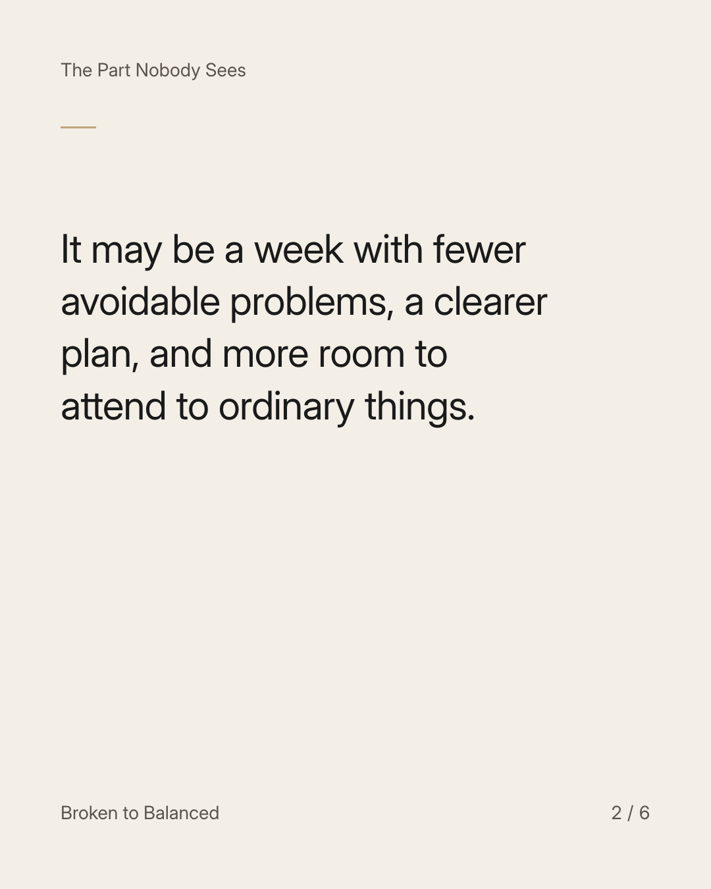
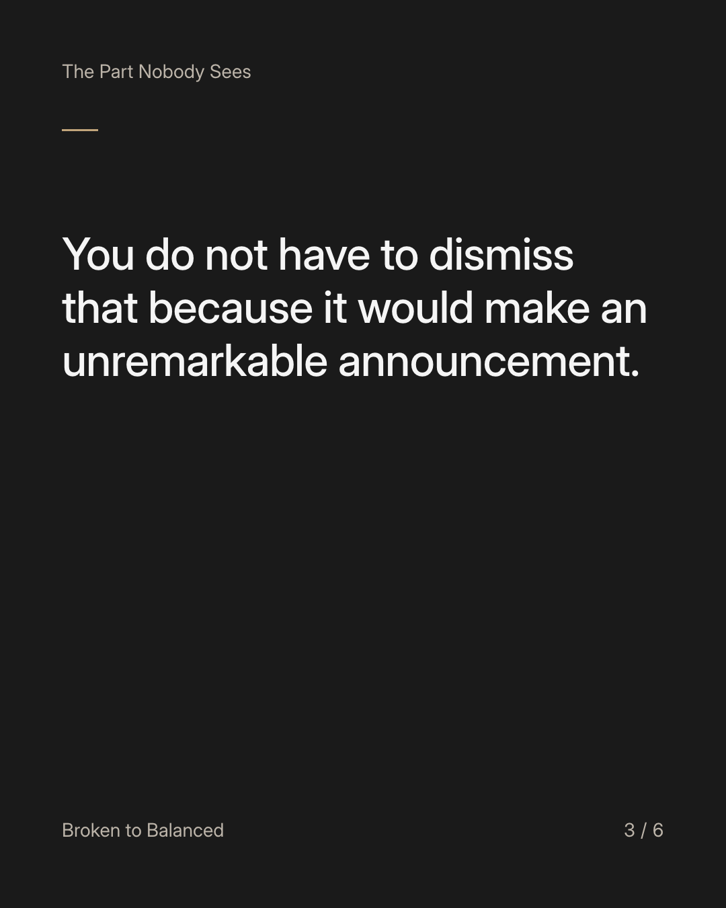
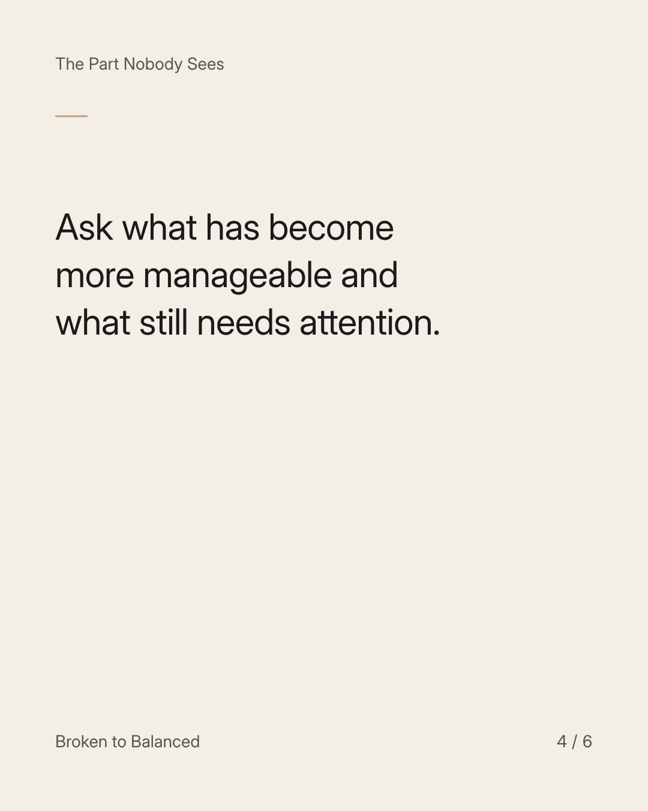
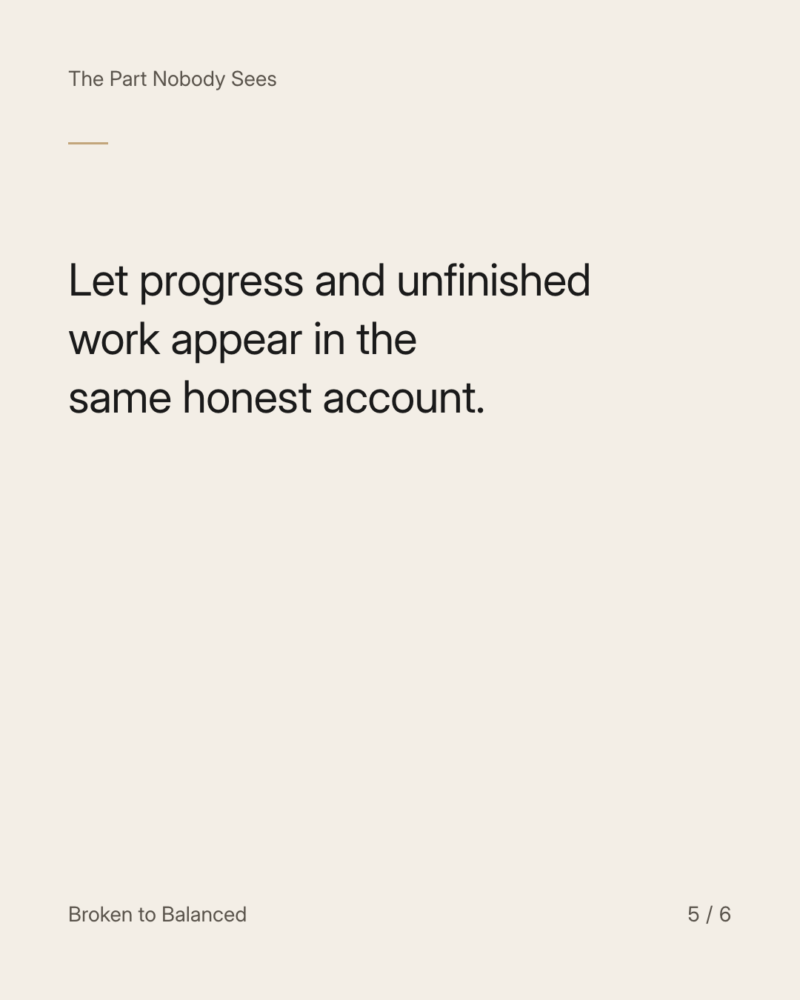
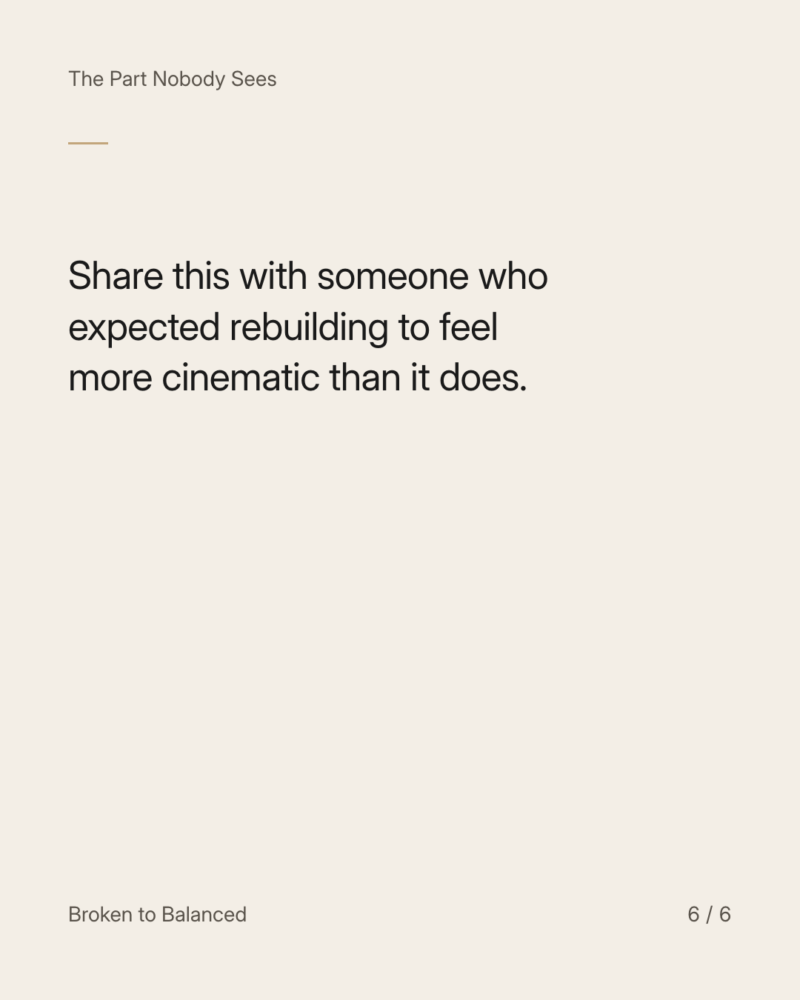

Exact text and accessibility text
A steadier life may not feel like a dramatic comeback.
Slide 1 of 6. A steadier life may not feel like a dramatic comeback.


Exact text and accessibility text
It may be a week with fewer avoidable problems, a clearer plan, and more room to attend to ordinary things.
Slide 2 of 6. It may be a week with fewer avoidable problems, a clearer plan, and more room to attend to ordinary things.


Exact text and accessibility text
You do not have to dismiss that because it would make an unremarkable announcement.
Slide 3 of 6. You do not have to dismiss that because it would make an unremarkable announcement.


Exact text and accessibility text
Ask what has become more manageable and what still needs attention.
Slide 4 of 6. Ask what has become more manageable and what still needs attention.


Exact text and accessibility text
Let progress and unfinished work appear in the same honest account.
Slide 5 of 6. Let progress and unfinished work appear in the same honest account.


Exact text and accessibility text
Share this with someone who expected rebuilding to feel more cinematic than it does.
Slide 6 of 6. Share this with someone who expected rebuilding to feel more cinematic than it does.
Exact caption
Plain-text fallback: select and copy the caption.